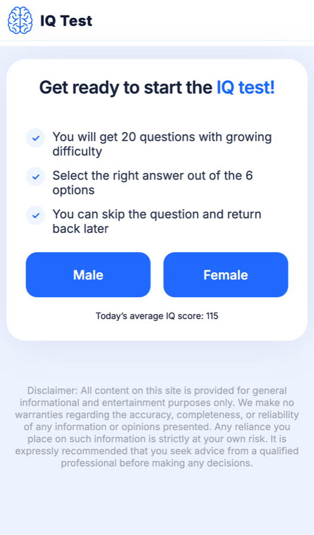
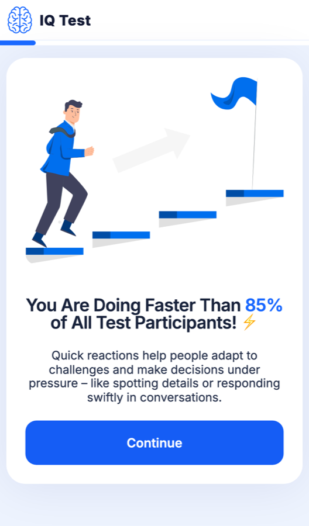
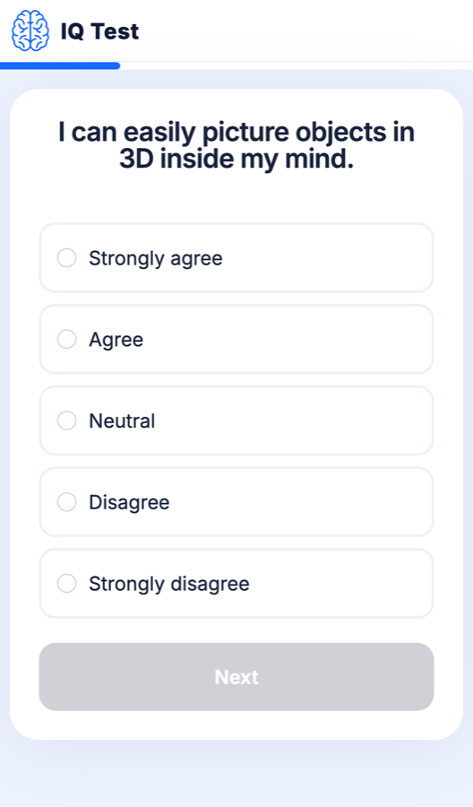
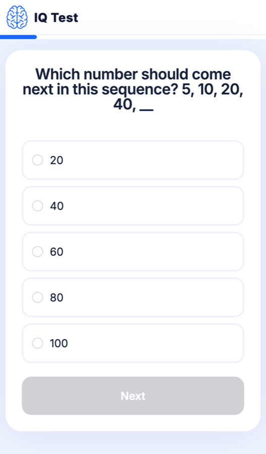
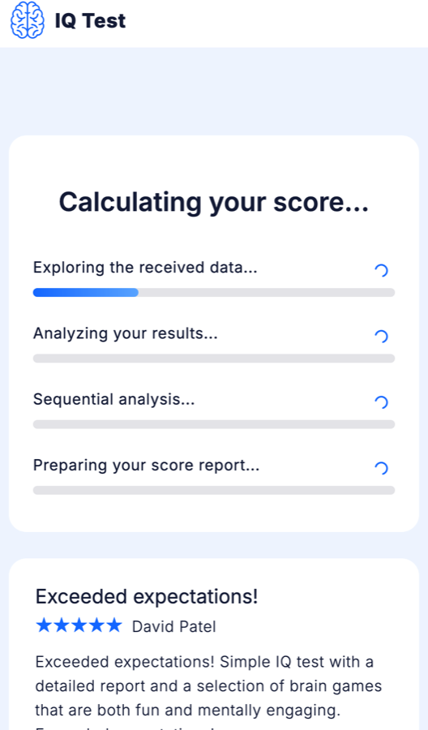
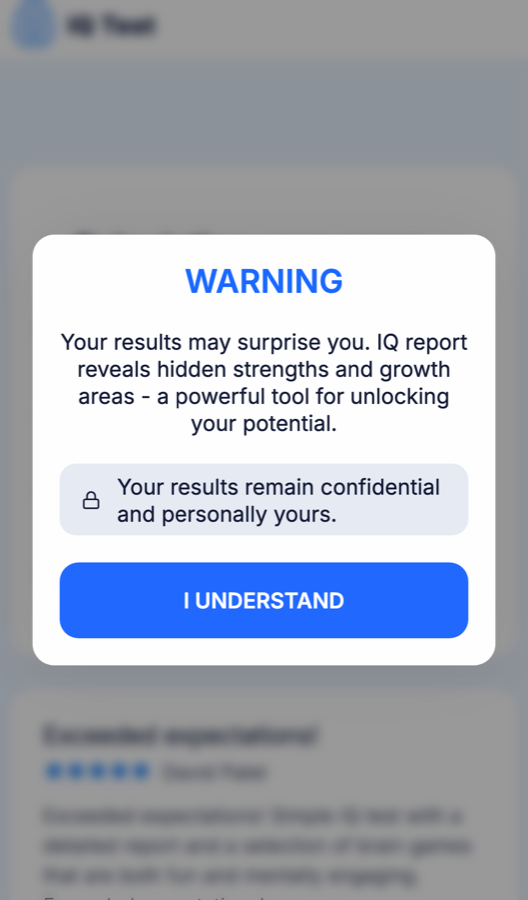
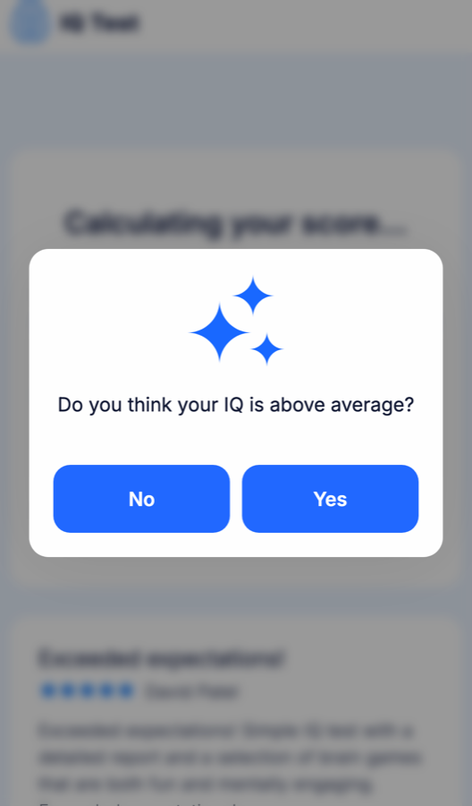
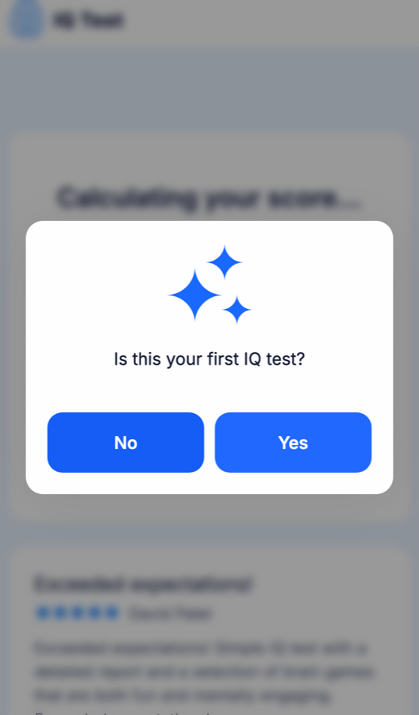

test-1 — новый контент квиза
Слева — как сейчас, справа — как должно быть. Меняются только тексты, картинки и вид перечисленных экранов. 40 вопросов, их порядок, номера вариантов ответа, матрицы и шкала результата остаются прежними. Правильный ответ в каждом вопросе стоит под тем же номером, что сейчас.
1. Первый экран
Первый экран квиза после загрузки

Ready when you are
A short test of logic, memory and numbers.
- 40 questions that start easy and get harder
- Choose one answer for each question
- No time limit, go at your own pace
To begin, choose:
Без строки «Today's average IQ score». Не карточка с галочками и двумя кнопками в ряд: иллюстрация сверху, пункты с нашими иконками, пол — крупными плитками ИЛИ другое решение.
2. Подбадривание
После 4-го вопроса

Great pace, keep it up!
Thinking quickly and staying focused are two of the skills this test measures. The next questions get a little harder.
Keep goingБез лестницы, флага, бегущего человека, молнии ⚡ и процентов.
3. Вопросы-утверждения
Позиции 4, 10, 37, 38. Подписи шкалы и их порядок не меняются, меняются текст утверждения и вид вариантов

I can tell if a piece of furniture will fit in a room just by looking.
Вид вариантов — крупные плитки с маленьким индикатором слева ИЛИ другое решение, но не как сейчас. Номера на плитках в макете только для наглядности.
4. Текстовые вопросы
Позиции 1–3, 5–9, 36. Вид экрана прежний, меняются вопрос и варианты; полный список ниже

What number comes next? 1, 4, 9, 16, __
Зелёным — правильный ответ, он под тем же номером, что сейчас (80 → 25, вариант 4). Подсветка только в прототипе.
5. Calculating: заголовок и шаги
Загрузка после последнего вопроса

Scoring your test…
Отзывы под загрузкой не трогаем.
6. Поп-ап вместо WARNING
Первый поп-ап поверх загрузки

Без заголовка капсом. Спокойная карточка, иконка — документ или отчёт ИЛИ другое решение.
7. Поп-апы с вопросом
Второй и третий поп-апы поверх загрузки. Кнопки на тех же местах: левая — бывшая No, правая — бывшая Yes


While you wait: how would you rate your memory?
Have you taken an IQ test before?
Наш логотип-мозг вместо звёздочек ✨.
8. Все меняющиеся вопросы
Номер варианта — как в коде сейчас (value 1–5). Зелёным — правильный ответ, его номер не меняется. Утверждения не оцениваются. Вопросы 11–35 (матрицы), 39 и 40 без изменений.
- 7
- 8
- 18
- 11
- 3
- Carl
- Anna
- Ben
- They are the same age
- Can't tell
- 1
- 4
- 2
- 3
- 5
- 3:15 pm
- 3:45 pm
- 4:15 pm
- 4:00 pm
- 4:30 pm
- 6
- 4
- 8
- 5
- 7
- 15
- 16
- 17
- 14
- 18
- 20
- 40
- 60
- 80
- 100
- 20
- 23
- 27
- 25
- 32
- 17
- 20
- 18
- 19
- 21
- 38
- 40
- 39
- 41
- 42
- Bark
- Puppy
- Pet
- Animal
- Tail
- Honey
- Hive
- Flower
- Wing
- Sting
- Knife
- Spoon
- Eating
- Kitchen
- Food
- Apple
- Pear
- Carrot
- Cherry
- Plum
- 1
- 2
- 6
- 12
- 0
- Saturday
- Sunday
- Tuesday
- Monday
- Wednesday
- 4-9-2-7
- 7-2-4-9
- 7-2-9-4
- 9-4-2-7
- 2-7-9-4
- ENOST
- SNOTE
- ENOTS
- ETONS
- NOTES